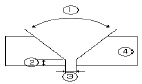
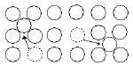

침투비파괴검사산업기사(구) (2008-03-02 기출문제)
1과목: 침투탐상시험원리
1. 다음 중 초음파탐상시험을 설명한 것으로 옳은 것은?
- 시험물 내부상태를 단면 또는 평면형태로 표시할 수 있다.
- 가장 널리 이용하는 수동탐상방법은 연속파법이다.
- 균열성 결함은 검출하기 매우 어렵다.
- 결함의 방향성은 검출능에 영향을 주지 않는다.
(정답률: 알수없음)

2. 다음 중 미세한 결함의 침투탐상검사를 수행하기 전에 탐상면을 전처리하는 방법으로 가장 적합한 것은?
- 쇠솔질
- 연삭(grinding)
- 증기세척법
- 샌드블라스팅(sand blasting)
(정답률: 알수없음)
3. 침투탐상시험 중 화재 위험성이 가장 큰 침투제와 현상제로 조합된 것은?
- 후유화성 염색침투제, 건식 현상제
- 용제제거성 염색침투제, 속건식 현상제
- 수세성 형광침투제, 수용성 습식 현상제
- 후유화성 형광침투제, 건식 현상제
(정답률: 알수없음)
4. 다음 침투탐상시험시 시험체의 온도가 낮은 경우 나타나는 검사결과의 신뢰성에 관한 설명 중 틀린 것은?
- 침투제의 점도가 낮어져서 탐상감도가 낮아진다.
- 침투제의 침투속도가 낮아져서 탐상감도가 낮아진다.
- 시험체를 가열하면 침투력이 개선될 수 있다.
- 형광침투제의 사용시 형광 특성이 나빠진다.
(정답률: 알수없음)
5. 시험체의 재질이 연강일 때 침투탐상시험의 전처리방법으로 부적절한 것은?
- 알칼리세척
- 모래분사법
- 증기세척
- 용제분무법
(정답률: 알수없음)
6. 다음 중 다른 비파괴검사법과 비교한 침투탐상시험의 장점으로 틀린 것은?
- 비교적 단순한 검사법이다.
- 어떠한 온도에서 효과적이다.
- 작은 검사물의 표면 검사에 적합하다.
- 표면의 미세한 균열을 찾아내는데 적합하다.
(정답률: 알수없음)
7. 침투탐상시험법에 의한 누설시험은 침투제의 어떤 성질을 이용한 것인가?
- 모세관현상
- 습윤작용
- 화학반응
- 고점성
(정답률: 알수없음)
8. 디젤 엔진의 크랭크 축을 제작하는 가공 공정 중에 고주파 열처리를 시행한 후 고주파 열처리에서 발생된 결함을 검출하고자 한다. 가장 적합한 비파괴검사법의 조합으로 옳은 것은?
- 방사선투과검사와 초음파탐상검사
- 초음파탐상검사와 자분탐상검사
- 자분탐상검사와 침투탐상검사
- 방사선투과검사와 침투탐상검사
(정답률: 알수없음)
9. 다음 중 형광침투탐상시험시 소형의 시험체를 다량 검사하기에 가장 적합한 현상제는?
- 용제 현탁성 현상제
- 건식 현상제
- 플라스틱 필름 현상제
- 습식 현상제
(정답률: 알수없음)
10. 자외선등을 잠시동안 직접 들여다 보았을 경우 나타나는 현상으로 가장 옳은 설명은?
- 약 1시간 정도 전혀 보이지 않는다.
- 동공에 영구적인 장해를 발생한다.
- 수정체와 초자체에 영구적인 장해를 발생한다.
- 시계(視界)가 흐려진다.
(정답률: 알수없음)
11. 일반적으로 새로운 침투액을 구입하여 감도를 점검할 때 사용하는 간편한 점검 방법은?
- 비중계로 비중을 측정한다.
- 접촉각(contact angle)을 측정한다.
- 균열이 있는 알루미늄 시험편을 사용하여 비교시험 한다.
- 메니스커스(Meniscus) 시험을 한다.
(정답률: 알수없음)
12. 다음 중 약한 빛에서 구별하기 쉬운 것부터 순서대로 나열한 것으로 옳은 것은?
- 적색 - 백색 - 황색 - 녹색
- 적색 - 백색 - 녹색 - 황색
- 적색 - 황색 - 녹색 - 백색
- 적색 - 황색 - 백색 - 녹색
(정답률: 알수없음)
13. 침투탐상시험의 유화처리에 관한 설명으로 옳지 않은 것은?
- 유화제는 시험체에 접촉되어 계속 반응하기 때문에 관유화 되는 것을 방지하기 위하여 세척을 빠르게 수행하여야 한다.
- 유화시간은 시험체 표면의 거칠기, 유화제의 화학적 조성 등에 따라 달라진다.
- 물베이스 유화제를 적용하는 경유는 유화제 적용에 앞서 미리 1차 수세를 하여야 한다.
- 물베이스 유화제는 기름베이스 유화제보다 반응이 빠르기 때문에 세척을 빠르게 수행해야 한다.
(정답률: 알수없음)
14. 침투액이 갖추어야 할 물성을 설명한 것 중 틀린것은?
- 세척성이 좋아야 한다.
- 표면장력이 커야 한다.
- 인화점(flash point)이 높아야 한다.
- 화학적으로 활성이어야 한다.
(정답률: 알수없음)
15. 다음 중 음향방출시험과 관계있는 것은?
- 바크 하우젠(Bark - Hausen) 효과
- 카이저(Kaiser) 효과
- 매스바우어(Mass Bauer) 효과
- 제백(Seebeck) 효과
(정답률: 알수없음)
16. 침투탐상검사에서 서로 인접한 두 개의 결함을 분리해서 탐상하기에 가장 좋은 현상법은?
- 습식현상법
- 속건식현상법
- 건식현상법
- 무현상법
(정답률: 알수없음)
17. 다음 중 침투탐상시험에서 시험체에 침투액을 적용했을 때 침투시간에 가장 큰 영향을 미치는 요소는?
- 예상되는 결함
- 시험체의 현상
- 시험체의 크기
- 시험체의 표면상태
(정답률: 알수없음)
18. 다음 중 침투탐상시험으로 발견할 수 있는 결함은?
- 표면아래 닫힌 결함
- 내부균열
- 표면균열
- 텅스텐 개재물
(정답률: 알수없음)
19. 표면이 거친 시험체를 재시험할 대 가장 효과적으로 사용되는 현상제는?
- 수용성 현상제
- 수현탁성 현상제
- 용제 현탁성 현상제
- 건식 현상제
(정답률: 알수없음)
20. 후유화성 염색침투탐상시험에서 유화제의 기능은?
- 건식현상제가 붙어 있도록 피막을 형성한다.
- 형광침투제 도는 염색침투제의 성능을 증대시킨다.
- 물로 세척이 가능하도록 표면의 침투제와 반응한다.
- 깊게 자리잡은 균열에 침투제를 신속히 침투하게 한다.
(정답률: 알수없음)
2과목: 침투탐상검사
21. 침투탐상검사와 관련된 설명 중 틀린 것은?
- 자외선등의 파장은 320 ~ 400nm 정도이다.
- 수세척으로 잉여침투액을 제거할 때 물의 온도는 60 ~ 80℃ 정도이다.
- 유화제의 적용시간은 일반적으로 2분 정도이다.
- 현상시간은 일반적으로 10분 정도이다.
(정답률: 알수없음)
22. 일반적으로 염색침투액을 사용한 침투탐상검사를 할 때 사용하지 않는 현상제는?
- 액막 현상제
- 건식 분말현상제
- 수현탁성 현상제
- 비수성 습식현상제
(정답률: 알수없음)
23. 침투탐상검사시 유화제에 대한 점검사항에 해당되지 않는 것은?
- 수분 함유량
- 농도
- 휘도
- 수세성
(정답률: 알수없음)
24. 침투탐상검사시 침투제에 대한 설명으로 틀린 것은?
- 수세서 염색침투제는 수분이 혼입되면 침투액의 성능이 저하된다.
- 용제제거성 형광침투제는 표면이 거친 시험체에는 사용이 비효율적이다.
- 수세성 염색침투제는 표면이 거친 시험체에 적합하다.
- 용제제거성 염색침투제는 조작 순서가 매우 복잡하다.
(정답률: 알수없음)
25. 소형의 다량검사에 가장 적합한 침투액 적용 방법은?
- 침지법(Dipping)
- 분사법(Spray)
- 붓칠법(Brushing)
- 배액법(Draining)
(정답률: 알수없음)
26. 다음 중 유화제에 필요한 일반적인 요건으로 틀린것은?
- 후유화성 침투액과 서로 잘 녹아야 한다.
- 유화 및 세척성이 좋아야 한다.
- 침투성이 좋아야 한다.
- 침투액과 서로 다른 색채를 가져야 한다.
(정답률: 알수없음)
27. 현장세서의 고소작업 및 휴대성을 중시하는 경우에 가장 적합한 검사방법의 조합으로 옳은 것은?
- 수세성 형광침투탐상검사 - 습식 현상제
- 수세성 염색침투탐상검사 - 속건식 현상제
- 용제제거성 형광침투탐상검사 - 습식 현상제
- 용제제거성 염색침투탐상검사 - 속건식 현상제
(정답률: 알수없음)
28. 특수한 침투탐상검사로서 제트엔진 부품 등과 같이 고온부하를 가한 상태에서 검사하는 방법을 무엇이라 하는가?
- Stress Zygio
- Wink Zygio
- Press Zygio
- Switch Zygio
(정답률: 알수없음)
29. 침투탐사검사시 침지, 분무, 붓칠, 흘림법 등을 모두 적용할 수 있는 처리법을 옳은 것은?
- 침투처리
- 세척처리
- 유화처리
- 현상처리
(정답률: 알수없음)
30. 다음의 침투액 중에서 계면활성제가 첨가되어 있는 것은?
- 수세성 형광침투액
- 후유화성 염색침투액
- 후유화성 형광침투액
- 용제제거성 염색침투액
(정답률: 알수없음)
31. 다음 중 침투탐상검사시 지시에 영향을 주는 인자와 가장 거리가 먼 것은?
- 시험체의 표면 조건
- 시험체나 침투액의 온도
- 시험체의 크기
- 침투시간
(정답률: 알수없음)
32. 다음 제조과정에 기인하는 결함 중 부품의 표면 가까이에 잘 나타나지 않는 결함은?
- 단조 랩(Forging Lap)
- 콜드셧(Cold Shut)
- 크레이터 균열에 의한 가능고 긴 지시
- 기공에 의한 지시
(정답률: 알수없음)
33. 침투탐상검사에 대한 설명으로 옳은 것은?
- 금속재료에만 탐상이 가능하다.
- 콘크리트와 목재의 탐상이 용이하다.
- 합성수지 제품에도 탐상이 가능하다.
- 모든 물질에 탐상이 가능하다.
(정답률: 알수없음)
34. 침투탐상검사의 건조처리 과정에서 시험부를 과잉 건조하지 않는 주된 이유는?
- 현상제의 빨아올림 기능의 상실을 막기 위해서
- 과잉현상제의 제거가 어려워지기 때문에
- 침투제의 감도가 감쇠되기 때문에
- 시간의 낭비를 방지하기 위해서
(정답률: 알수없음)
35. 탐상 중의 잉여 침투액을 제거하기 위한 방법으로 옳은 것은?
- 솔로 제거하는 방법
- 물로 세척하는 방법
- 초음파로 세척하는 방법
- 증기로 유지성분을 제거하는 방법
(정답률: 알수없음)
36. 침투탐상검사의 전처리한 내용을 옳게 설명한 것은?
- 시험체 표면에 부착된 오염물질 및 흠속에 잔류되어 있는 유지류 또는 수분 등을 충분히 제거한다.
- 부식 방지를 위한 페이트 및 도장은 벗겨지지 않도록 세척하고 오염물질은 충분히 제거한다.
- 시험체 표면에 있는 용제나 물 등의 액체는 침투액 적용에 효과적이므로 살짝 건조시킨다.
- 표면거칠기가 심한 표면은 천이나 타올 등 부드러운것을 사용하여 닦아내어야 한다.
(정답률: 알수없음)
37. 현장검사에 사용되는 휴대용 자외선등의 고압수은 등은 일반적으로 몇 W 의것이 사용되는가?
- 10
- 50
- 100
- 400
(정답률: 알수없음)
38. 침투액에 필요한 성능을 설명한 것 중 틀린 것은?
- 잉여침투액은 세척처리에 의해 제거가 잘 되어서는 안된다.
- 염료나 형광 도료가 분산 매질 속에 잘 분산되어야 한다.
- 미세한 결함 속으로 침투해 들어갈 수 있어야 한다.
- 결함지시와 배경 면의 식별이 뚜렷해야 한다.
(정답률: 알수없음)
39. 침투탐상시험용 대비시험편의 사용 목적이 아닌 것은?
- 탐상제의 성능비교
- 침투액의 성능평가
- 탐상조작의 적부점검
- 탐상조건의 결정
(정답률: 알수없음)
40. 다음 시험방법 중 특별한 규정이 없는 한 시험장치가 필요없는 경우는?
- 수세성형광침투탐상 - 습식현상
- 수세성영색침투탐상 - 습식현상
- 용제제거성염색침투탐상 - 속건식현상
- 후유화성형광침투탐상 - 습식현상
(정답률: 알수없음)
3과목: 침투탐상관련규격
41. 침투탐상 시험방법 및 침투지시모양의 분류 (ks b 0816)에 의한 탐상제의 현상방법에 의한 기호와 분류가 바르게 연결된 것은?
- D : 수용성 현상제
- A : 수현탁성 현상제
- N : 건식 현상제
- S : 속건식 현상제
(정답률: 알수없음)
42. 보일러 및 압력 용기에 대한 표준침투탐상검사(ASME sec.vArt.24 SE-165)에서 염색침투제에 의한 탐상시 시험체를 더운 공기로 건조시킬 필요가 있는 경우 일반적으로 사용하는 건조기내에서의 최대허용 부품 온도는?
- 125℉
- 225℉
- 325℉
- 425℉
(정답률: 알수없음)
43. 침투탐상 시험방법 및 침투지시모양의 분류 (ks b 0816)에규정된 시험체의 표면에 부착되어 있는 잉여 침투액의 배액방법은?
- 유화처리 또는 세척처리 후에 배액한다
- 침투처리 중에 배액한다
- 유화처리 또는 세척처리 전에 배액한다
- 현상처리 후에 배액한다
(정답률: 알수없음)
44. 침투탐상 시험방법 및 침투지시모양의 분류 (ks b 0816)에의해 탐상시험을 할 때 유화제 적용 방법이 아닌 것은?
- 침지
- 붓기
- 교반
- 분무
(정답률: 알수없음)
45. 보일러 및 압력용기에 대한 표준침투탐상검사(ASME sec.v Art.24 SE-165)에서 용제제거성 형광침투제를 이용하여 알루미늄 용접부를 시험하고자 할 때 권장하는 최소침투시간은 얼마인가?
- 10분
- 7분
- 5분
- 3분
(정답률: 알수없음)
46. 침투탐상 시험방법 및 침투지시모양의 분류(ASME sec.vArt.24 SE-165)에 따른 염색침투탐상 시험에서 조명 장치는 시험면의 표면에 적어도 어느 정도의 백색광을 방사하는 것이어야 하는가?
- 20룩스
- 100룩스
- 200룩스
- 500룩스
(정답률: 알수없음)
47. 보일러 및 압력 용기에 대한 침투탐상검사(ASME sec.vArt.24 SE-165)에서 원자력발전소 부품에 대한 탐상시험을 행할 때 인정하는 탐상법에 속하지 않는 것은?
- 이원성 염색침투탐상시험
- 수세성 형광침투탐상시험
- 후유화성 염색침투탐상시험
- 용제제거성 형광침투탐상시험
(정답률: 알수없음)
48. 보일러 및 압력용기에 대한 침투탐상검사 (ASME sec.vArt.24 SE-165)에서 염색침투탐상을 할 경우에 지시를 관찰 하기에 적당한 조도는 최소 몇 Lx 인가?
- 20
- 500
- 700
- 1000
(정답률: 알수없음)
49. 보일러 및 압력용기에 대한 침투탐상검사 (ASME sec.vArt.24 SE-165)에 의한 표준온도가 아닌 온도에서의 탐상시험 비교시험편 적용에 대한 설명이다. 틀린 것은?
- 10℃보다 낮은 온도에서 안정된 기법은 시험편 A와 B의 지시모양 비교없이 10~52℃의 범위에서 인정된 것으로 고려하여야 한다.
- 10℃미만의 온도에 대한 인정이 필요한 경우 비교시험편 B및 모든 탐상제를 인정받으려는 시험온도로 냉각하여야 한다.
- 인정 받으려는 온도가 52℃를 넘는 경우 시험편 B를 비교시험이 완료될 때까지 인정 받으려는 온도로 유지시켜야 한다.
- 52℃를 넘는 온도에 대한 기법을 인정하기 위해서는 상한 및 하한 온도를 정하고 그 온도범위에서 인정된 것으로 하여야 한다.
(정답률: 알수없음)
50. 침투탐상 시험방법 및 침투지시모양의 분류(ks b0816)에서 특별히 규정하지 않으면 침투제 적용시 침투제와 시험면의 온도 범위는 어떻게 규정하고 있는가?
- 5℃이하
- 5~10℃
- 15~50℃
- 50℃이상
(정답률: 알수없음)
51. 침투탐상 시험방법 및 침투지시모양의 분류 (ks b 0816)에 의한 탐상시 침투지시모양의 관찰에 대한 설명으로 옳은 것은?
- 건조처리 후 7 ~ 60분사이가 바람직하다.
- 건조처지 전 7 ~ 60분사이가 바람직하다.
- 현상제 적용 후 7 ~ 60분사이가 바람직하다.
- 현상제 적용 전 7 ~ 60분사이가 바람직하다.
(정답률: 알수없음)
52. 보일러 및 압력용기에 대한 표준침투탐상검사(ASME sec.vArt.24 SE-165)에서 자외선등의 강도를 주기적으로 점검하도록 규정하고 있다. 최대 점검 주기는?
- 매일
- 3일
- 5일
- 1주일
(정답률: 알수없음)
53. 항공 우주용 기기의 침투탐상 검사방법 (ks w 0914)에 따라 탐상할 때 시험체에서 침투액의 체류시간은 최소 얼마 이상으로 하여야 하는가?
- 3분
- 5분
- 7분
- 10분
(정답률: 알수없음)
54. 침투탐상 시험방법 및 침투지시모양의 분류 (ks b 0816)에 따른 결함의 분류에서 정해진 면적 안에 존재하는 1개 이상의 결함을 의미하는 것은?
- 연속 결함
- 갈라짐
- 분산 결함
- 수축성 결함
(정답률: 알수없음)
55. 항공 우주용 기기의 침투탐상 검사방법 (ks w 0914)에서 규정하고 있는 액체산소와 양립할 수 있는 재료에 대한 침투탐상제는 몇 J 이상의 충격감도시험을 합격한 것이라야 하는가?
- 65
- 75
- 85
- 95
(정답률: 알수없음)
56. 웹서비스에서 제공되는 여러 가지 자원들에 대한 주소를 나타내는 것은?
- JAVA
- PPP
- POP
- FTP
(정답률: 알수없음)
57. 전자우편의 송ㆍ수신을 위해 사용하는 웹 브라우저가 아닌 것은?
- 쿠키(Cookie)
- 모자이크(Mosaic)
- 넷스케이프(netscape)
- 인터넷 익스플로러(Internet Exlplorer)
(정답률: 알수없음)
58. 인터넷에 접속하기 위해 사용하는 웹 브라우저가 아닌 것은?
- 쿠키 (Cookie)
- 모자이크 (Mosaic)
- 넷스케이프 (Netscape)
- 인터넷 익스플로러 (Internet Explorer)
(정답률: 알수없음)
59. 컴퓨터에서 속도가 빠른 CPU와 속도가 느린 주기억장치 사이에 위치하여 동작속도를 빠르게 해주는 메모리는?
- 캐시 메모리
- 가상 메모리
- 플래시 매모리
- 자기코어 메모리
(정답률: 알수없음)
60. 도메인네임을 구성하는 영역 중 최상위 도메인의 종류와 그에 해당하는 기관명으로 옳지 않은 것은?
- edu - 교육기관
- org - 연구기관
- net - 네트워크 관련 기관
- gov - 정부 기관
(정답률: 알수없음)
4과목: 금속재료 및 용접일반
61. 잠호용접이라고도 하며 용접법 중 입상의 미세한 용제를 사용하는 용접법은?
- 불활성가스 아크 용접
- 버트 용접
- 서브머지드 아크 용접
- 시임 용접
(정답률: 알수없음)
62. 피복 아크 용접봉 선택시 고려할 사항이 아닌 것은?
- 용접성
- 자동성
- 작업성
- 경제성
(정답률: 알수없음)
63. 교류 용접기의 종류 4가지를 올바르게 나열한 것은?
- 가동철심형, 발전기형, 탭전환형, 가포화리액터형
- 가동철심형, 가동코일형, 탭전환형, 가포화리액터형
- 가동철심형, 가동코일형, 정류기형, 포화리액터형
- 가동철심형, 가동코일형, 탭전환형, 셀렌 정류기형
(정답률: 알수없음)
64. 다음 용접법중 저항용접에 속하는 것은?
- 프로젝션 용접
- 전자빔 용접
- 테르밋 용접
- 레이져 용접
(정답률: 알수없음)
65. 가스 절단속도에 영향을 미치지 않는 것은?
- 절단산소의 압력
- 절단산소의 순도
- 강판의 두께
- 용기내의 가스압력
(정답률: 알수없음)
66. 다음 용접부 그림의 명칭중 틀린 것은?

- 1:홈의 각도
- 2:홈의 깊이
- 3:루트 간격
- 4:모재
(정답률: 알수없음)
67. 맞대기용접,필릿용접 등의 비드 표면과 모재와의 경계부에 발생되는 균열이며, 구속응력이 클 때 용접부 가장자리에서 발생하여 성장하는 균열은?
- 토 균열
- 설퍼 균열
- 루트 균열
- 헤어 크랙
(정답률: 알수없음)
68. 표점거리 50mm, 인장시험후 표점거리가 60mm일 경우 연신율은?
- 16.7%
- 20%
- 25%
- 33.3%
(정답률: 알수없음)
69. 잔류응력 완화법이 아닌 것은?
- 응력 제거 어닐링
- 그라인딩
- 저온 응력 완화법
- 피닝
(정답률: 알수없음)
70. 탄산가스 아크 용접법의 분류에서 용극식 중 플럭스 와이어 Co2법에 속하지 않은 것은?
- 아코스 아크법
- 텅스텐 아크법
- 퓨즈 아크법
- 유니언 아크법
(정답률: 알수없음)
71. 다음 열전대 중에서 가장 높은 온도를 측정할 수있는 것은?
- 백금 - 백금. 로듐
- 철 - 콘스탄탄
- 크로엘 - 알루엘
- 구리 - 콘스탄탄
(정답률: 알수없음)
72. 다음 중 금속에 관한 일반적 설명으로 틀린 것은?
- 수은을 제외한 금속은 상온에서 고체상태의 결정구조를 갖는다
- 전성 및 연성이 좋고, 금속 고유의 광택을 갖는다
- 강자성체 금속으로는 Fe, Co,Ni 등이 있다
- 순금속은 합금에 비해 경도가 높다.
(정답률: 알수없음)
73. 다음 중 대표적인 시효 경화성 합금은?
- Al-Cu-Mg-Mn 합금
- Cu-Zn 합금
- Cu-Sn 합금
- Fe-C 합금
(정답률: 알수없음)
74. 다음 중 실용되고 있는 형상기억 합금계가 아닌 것은?
- Co-Mn 계
- Ti-Ni 계
- Cu-Al-Ni 계
- Cu-Zn-Al 계
(정답률: 알수없음)
75. 오스테나이트계(austenite type)스테인리스강에서 입계부식(intergranular corrosion)을 방지하기 위한 대책이 아닌 것은?
- 탄소의 함량을 0.03% 이하로 낮게 한 것을 사용한다
- 1000~1150℃로 가열하여 탄화물을 고용시킨 후 급냉하는 고용화열처리를 한다.
- Cr 탄화물을 가능한 한 많이 석출시켜 스테인리스강이 예민화(sensitize) 되도록 한다.
- 탄소와의 친화력이 Cr 보다 큰 Ti , Nb 등을 첨가해서 안정화시킨다.
(정답률: 알수없음)
76. 심한 가공이나 주조하여 만든 Cu 합금은 사용 중 혹은 저장 중에 자연균열 (season crack)이 일어난다. 이 균열의 방지법으로 틀린 것은?
- 표면에 도료를 칠한다
- 표면에 아연도금을 한다
- 암모니아가서 분위기 속에 저장해 둔다
- 185 ~ 260℃ 의 범위에서 가열하여 응력을 제거한다.
(정답률: 알수없음)
77. [그림]과 같은 격자결함은? (단, 점선으로 표시된 원자는 격자사이로 끼어 들어가는 상태를 그린 것이다)

- 점결함(point defect)
- 선결함(line defect)
- 연결함 (plane defect)
- 체적결함 (volume defect)
(정답률: 알수없음)
78. 다음 중 비정질 합금에 대한 설명으로 틀린 것은?
- 결정이방성이 없다.
- 구조적으로 장거리의 규칙성이 없다.
- 가공경화가 심하여 경도를 상승시킨다.
- 열에 약하며, 고온에서는 결정화하여 전혀 다른 재료가 된다.
(정답률: 알수없음)
79. 0.5%탄소강의 723℃ 선상에서의 peaelite 양은 몇 %정도 인가? (단, 공석정의 탄소량은 0.8% 이다)
- 37.5
- 42.5
- 57.5
- 62.5
(정답률: 알수없음)
80. 응고 과정에서 결정이 나뭇가지 모양으로 이루어진 결정조직은?
- 수지상결함
- 주상결정
- 편상결정
- 구상결정
(정답률: 알수없음)